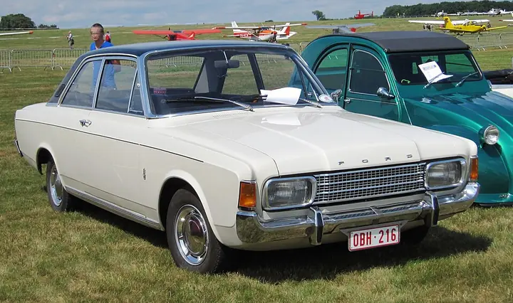
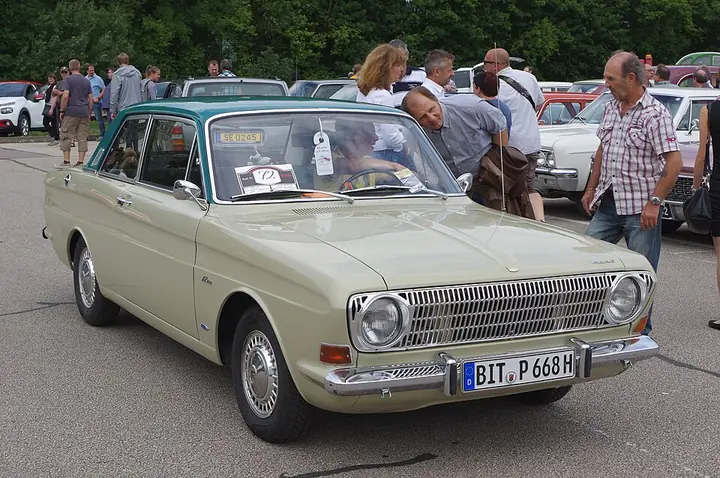
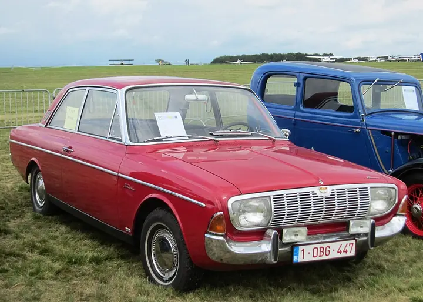
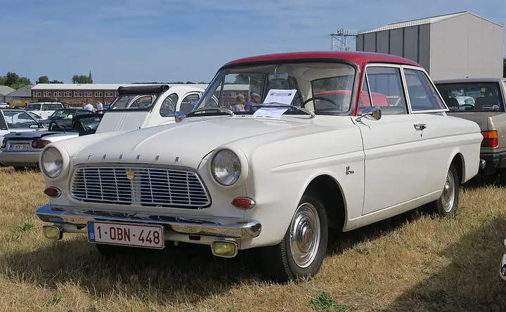
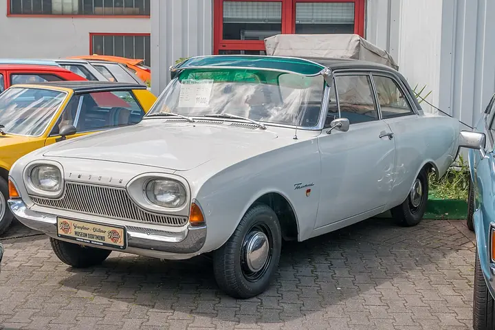
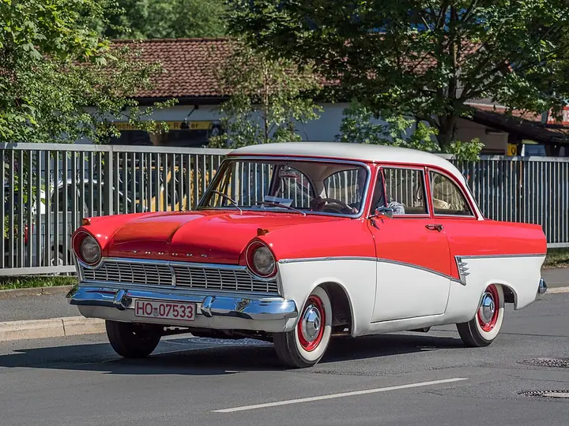
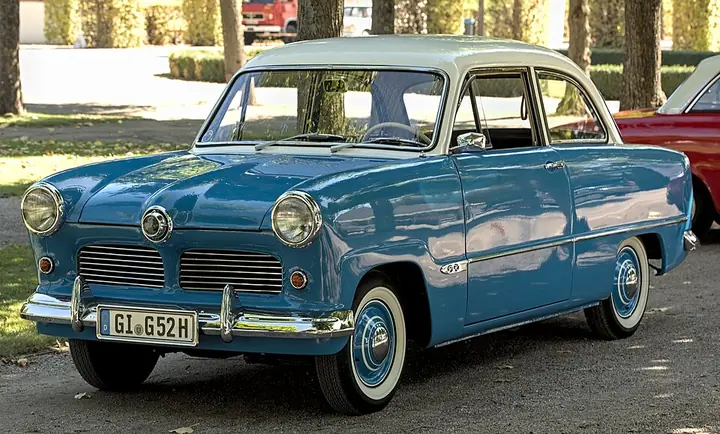
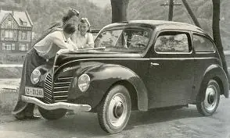

Ford Taunus
Taunus TC (1970–1975) · 1970–1994
Abstract
This generation of the Ford Taunus is a large family car (D), built 1970–1982 (Europe) in Belgium: Genk, South Korea: Ulsan (Hyundai), Argentina: General Pacheco (Ford Argentina) and other plants. Body styles: 2-/4-door saloon, 5-door "Turnier" estate car, 2-door coupé (1970–1975). This generation has its own article: Ford Taunus TC.


1Specifications
| Production | 1970–1982 (Europe)1977–1983 (South Korea)1974–1984 (Argentina)1984–1994 (Turkey) |
|---|---|
| Assembly | Belgium: GenkSouth Korea: Ulsan (Hyundai)Argentina: General Pacheco (Ford Argentina)Turkey: Istanbul (Ford Otosan)Finland:Peräjärvi |
| Class | Large family car (D) |
| Body style | 2-/4-door saloon5-door "Turnier" estate car2-door coupé (1970–1975) |
| Engine | 1294 cm³ Pinto OHC I4 (1970–1982)1593 cm³ Pinto OHC I4 (1970–1982)1993 cm³ Pinto OHC I4 (1976–1982)1999 cm³ Cologne V6 (1970–1982)2293 cm³ Cologne V6 (1970–1982) |
| Transmission | 4-speed manual all-synchromesh3-speed automatic (optional at extra cost) |
| Wheelbase | 2579 mm |
| Length | 4340–4480 mm |
| Width | 1700–1712 mm |
| Height | 1362–1363 mm |
| Weight | 1480–1600 kg (laden) |
| Predecessor | Ford Taunus 12M / 15M P6 |
| Successor | Ford Sierra |
2Versions
- Taunus TC (1970–1975)
- Option packages
- 1973 facelift
- Taunus TC2 (1976–1979)
- Cortina comparisons
- Updated bodywork (facelift)
- Under the TC2 "reskin" little changed
- Commercial (TC2/TC3)
- Taunus TC3 (1979–1982)
3Previous generations





_at_Schaffen-Diest_(2014).JPG){kind=link}



.jpg){kind=link}






4Generation by generation
Length +6% from the first to the last
Taunus G93A (1939–1942) / G73A 19394,080 mm
G13 19524,060 mm
P2 19574,375 mm
P3 19604,452 mm
P4 19624,248 mm
P5 19644,585 mm
P6 19664,389 mm
P7 19674,627 mm
Taunus TC 19704,340 mm
Weight +76% from the first to the last
Taunus G93A (1939–1942) / G73A 1939840 kg
G13 1952850 kg
P2 19571,010 kg
P3 1960940 kg
P4 1962860 kg
P5 1964965 kg
P6 1966845 kg
P7 19671,050 kg
Taunus TC 19701,480 kg